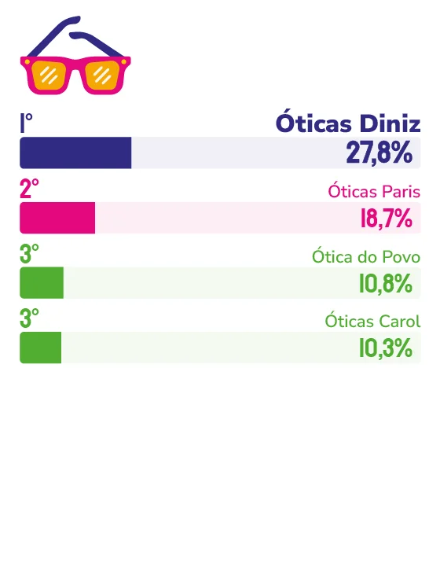

ÓTICA
ÓTICAS DINIZ
Com 20 lojas e mais de 140 colaboradores na Grande Vitória, Óticas Diniz transformou o que chama de “atendimento de coração” em vantagem difícil de copiar.
Diretor de Franchising das Óticas Diniz, Juarez Rezena resume a filosofia por trás da rede numa frase direta: “não é apenas sobre óculos, é sobre superar expectativas e gerar experiências únicas em cada atendimento”. A empresa chama isso de atendimento de coração, um conceito que, segundo Rezena, nasce da cultura interna e do envolvimento diário do time, o que o torna, em suas palavras, “difícil de copiar”.
A história começou em 2004, quando a rede chegou ao Espírito Santo. Hoje são 20 lojas e mais de 140 colaboradores na Grande Vitória. “Esse resultado é, acima de tudo, mérito das pessoas que fazem parte do nosso time, que vestem a camisa todos os dias e entendem que cada cliente atendido é uma oportunidade de fortalecer essa relação”, afirma o diretor.
Não houve, segundo Rezena, um momento único de virada capaz de explicar essa trajetória. Foi, na verdade, um processo contínuo. “O fortalecimento desse vínculo é resultado da aplicação consistente de uma cultura baseada em relacionamento, respeito e cuidado, desde o primeiro dia da nossa chegada ao Espírito Santo”. Uma leitura que também orienta a forma como a empresa observa o consumidor capixaba hoje, descrito por Rezena como “maduro, exigente e cada vez mais consciente”, que valoriza preço justo, mas sobretudo confiança e atendimento qualificado.
É esse diagnóstico que sustenta os próximos passos da marca. Para 2026, um dos movimentos mais visíveis será a reinauguração da Diniz Prime, no Shopping Praia da Costa, em Vila Velha, num espaço maior e pensado para uma experiência premium completa. Paralelamente, a rede amplia o uso de inteligência artificial no relacionamento com o cliente, do primeiro contato ao pós-venda, e prepara a chegada de novas marcas exclusivas e inovações em lentes oftálmicas. “A tecnologia será cada vez mais uma aliada do atendimento humano”, resume Rezena.
Apesar do avanço tecnológico, o diretor faz questão de demarcar o que, para ele, não é negociável: o “atendimento de coração”, que, segundo a empresa, define a relação com o cliente capixaba desde a chegada da marca ao estado.

Juarez Rezena
Diretor de Franchising das Óticas Diniz
“Marcas ícones não são construídas apenas com produtos ou tecnologia, mas com relações verdadeiras, confiança e cuidado ao longo do tempo. É isso que nos trouxe até aqui e é isso que continuará nos mantendo relevantes.”
81
